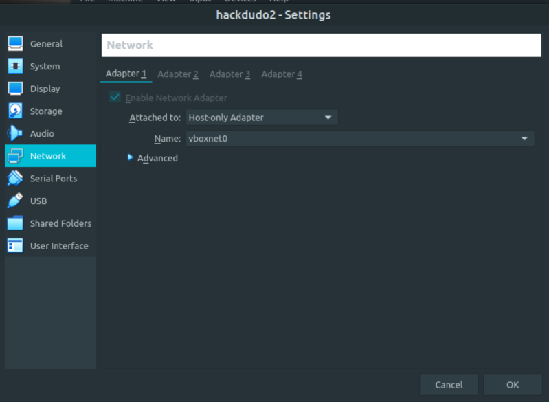
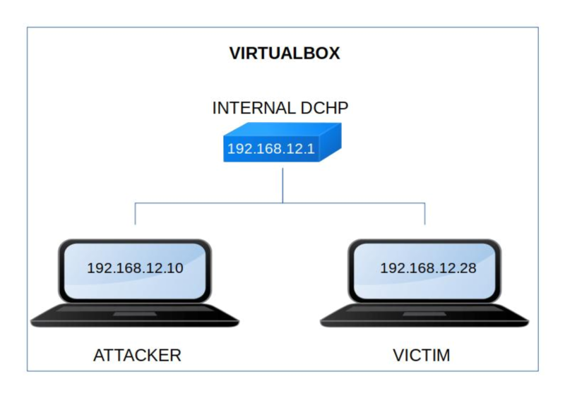

Hacksudo: 2 (HackDudo)
▸ Hacksudo: 2 (HackDudo)
▸ 1. Scan Network
▸ 2. Finding Services and Ports
▸ 3. Enumerate
▸ 3.1 Webserver with Gobuster
▸ 3.2 Fuzzing
▸ 4. Explotiation
▸ 4.1 Mounting the NFS (First flag)
▸ 4.2 no_root_squash
▸ 5. Privilege Escalation (Second flag)
Difficulty: Easy.
Flag: 2 flags.
Learning:
• Reconnaissance
Scan Network
Find services
• Enumerate
Webserver with Gobuster
Fuzzing
• Exploitation
Mount the NFS
no_root_squash
• Privilege Escalation
bash
• Download (Mirror): https://download.vulnhub.com/hacksudo/hackdudo2.rar
• Download (Torrent): https://download.vulnhub.com/hacksudo/hackdudo2.rar.torrent
Install the machine on VirtualBox:
1. Download the file and extract it.
2. On Virtualbox choose File->Import Appliance.
3. Select the file “ova”.
4. Accept to import.


Watch your Machine IP.
$ ifconfig
Output:

Diagram
